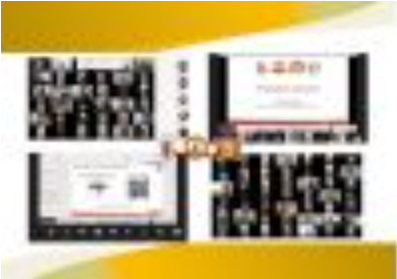

Más noticias

Universidad de Pamplona inicia entrenamiento en resiliencia para estudiantes de pregrado
Comunidad universitaria de la Facultad de Salud en la sede Villa del Rosario-Cúcuta goza de nuevos entornos
Está pasando
2025-II Vacacionales 2025
2025-II Calendario académico pregrado presencial de la sede Pamplona (excepto Medicina)
2025-II Calendario académico pregrado presencial de la sede Villa del Rosario – Cúcuta
2025-II Calendario académico pregrado modalidad a Distancia
2024 Listado de aspirantes habilitados para continuar en el proceso